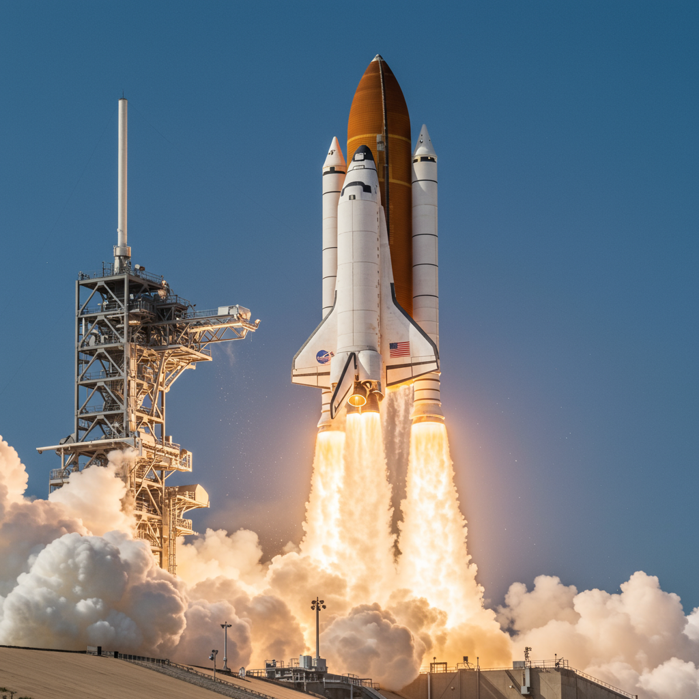

STS-51-L – Challenger
Agencia: NASA
Lanzamiento: 28 de enero de 1986 – 16:38 UTC
Duración: 1 minuto 13 segundos (misión abortada por accidente)
Tipo de misión: Lanzamiento de satélites y experimento educativo
Vehículo: Challenger (OV-099)
Centro de lanzamiento: Kennedy Space Center – Plataforma 39B
Tripulación
- Francis R. Scobee – Comandante
- Michael J. Smith – Piloto
- Judith A. Resnik – Especialista de misión
- Ellison S. Onizuka – Especialista de misión
- Ronald McNair – Especialista de misión
- Gregory Jarvis – Especialista de carga útil
- Christa McAuliffe – Maestra en el espacio (civil)
Objetivos de la misión
Desplegar satélites de comunicaciones (TDRS-B), realizar experimentos con estudiantes y educar en tiempo real desde el espacio con la participación de una civil en la tripulación.
Evento catastrófico
La misión fue abortada 73 segundos después del despegue debido a una falla en una junta tórica del propulsor derecho (SRB), lo que provocó la desintegración del orbitador. Toda la tripulación falleció.
Legado histórico
STS-51-L marcó un antes y un después en la historia aeroespacial. El accidente llevó a una profunda revisión del programa del transbordador, mejoras en seguridad y rediseño de los SRB. La misión es recordada con solemnidad y respeto en cada referencia histórica.